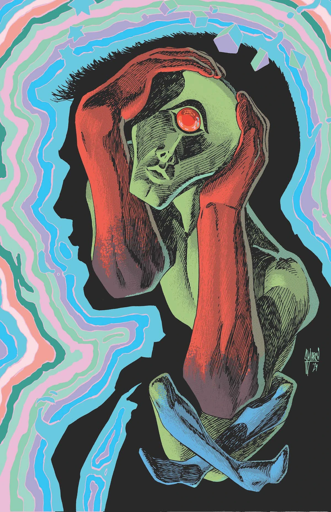

Personagens Secundários
Aliados
-
Nome do aliado
-
Nome do aliado
Adversários
-
Nome do adversário
-
Nome do adversário
Nem todo herói possui um corpo — alguns existem apenas na mente.

Diferente de qualquer outra versão, o Caçador de Marte não possui um corpo físico. Ele é uma entidade alienígena que existe no plano mental, interagindo com pensamentos, emoções e consciência.
Ligado ao agente do FBI John Jones, ele atua como uma presença constante em sua mente, formando uma parceria incomum para combater ameaças invisíveis ao mundo físico.
A entidade conhecida como "Marciano" se liga ao agente do FBI John Jones após um evento traumático, salvando sua vida e passando a habitar sua mente.
Diferente de outras versões, essa entidade não possui forma física, existindo apenas no plano mental e interagindo diretamente com pensamentos e emoções humanas.
Juntos, eles enfrentam ameaças psíquicas, incluindo o "White Martian", uma entidade que manipula emoções negativas e espalha caos.
O Marciano não é um ser físico tradicional, mas uma consciência alienígena que existe no plano mental. Sua verdadeira forma é desconhecida, sendo percebida apenas através da mente de seu hospedeiro.
Sua existência levanta dúvidas sobre identidade, controle e até mesmo o que define um indivíduo como "real".
Nome do aliado
Nome do aliado
Nome do adversário
Nome do adversário